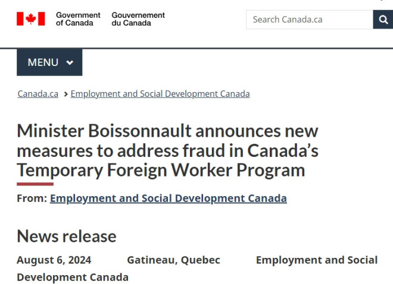
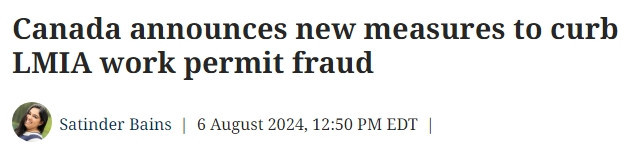

加拿大就业和劳动力发展部长Randy Boissonnault今天向全国各地的商业协会说明，政府考虑拒绝在低薪职位类别的临时外劳（TFW）申请。

这适用于支付时薪低于各省和地区中位数的工作。每个地区的中位数工资各不相同，从爱德华王子岛和新斯科舍省的每小时24元到西北地区的每小时39.24元不等。
部长在一份声明中说：“过去一年里，我一直明确表示，滥用和误用临时外劳必须停止。保护在加拿大的临时外劳的健康和安全是我非常重视的责任。”
“有些人正在利用他人，并且损害了合法企业。我们正在实施更多改革，阻止滥用和欺诈进入临时外劳计划。”
雇主在寻找临时外劳时需要向联邦政府提交劳动力市场影响评估（LMIA），目的是表明他们在28天内找不到合格的加拿大人来填补职位。标准的处理费为1000元，应该由雇主支付。
然而，移民、律师、代理机构和顾问一直在对伪造的LMIA文件发出警告，这些文件的售价高达数万元。
在2023-24财年，临时外劳计划下发出了超过200万元的罚款，比前一年增加了36%。

在今天的会议上，部长Randy Boissonnault概述了以下正在实施的行动，以减少加拿大对临时外劳的使用：
- 严格执行临时外劳20%上限政策：这包括适用于有意申请永久居留的临时外劳的“双重意图子类别”政策。使用该类别的雇主将受到更严格的指南约束；
- 在处理劳动力市场影响评估（LMIA）和检查时加强对高风险领域的严格监督；
- 考虑提高LMIA费用，用于支付处理诚信的额外工作；
- 计划实施有关雇主资格的监管变更（例如，企业运营的最低年限或雇主的裁员历史等因素）。
部长还告知商业协会，他正在考虑在低工资类别下实施“拒绝处理”政策。如果实施，这将阻止某些地区和行业的雇主使用临时外劳计划。
此外，政府正在努力更新临时外劳计划，并计划为农业和鱼类与海鲜加工行业推出一个新的外劳类别，这在2022年预算中已有宣布。
近年来，临时外劳计划（TFW）的申请获批数量显著增加。去年，共有239,646份申请获批，超过2018年的108,988份，几乎翻了一番。2022年，批准的申请数量为222,847份，比前一年增加了超过89,000份。
农业仍然是使用最多临时外劳的行业，但自2018年以来，其他几个行业的需求也大幅增加。这些行业包括护士助理、食品服务支持工作（如柜台服务员）以及建筑业。
政府表示，尽管大多数雇主使用该计划的目的是正当的，但仍需更多工作来保护加拿大的劳动力市场，并追究不良行为者的责任。部长将密切监测对临时外劳计划的雇主需求以及就业率，并在必要时采取进一步的收紧措施。今天的会议表明加拿大政府有意加强与雇主的互动，确保他们清楚了解自己在该计划下的义务。
关于临时外劳计划（TFW）
临时外劳计划（TFW Program）旨在响应劳动力市场的变化。在疫情后，劳动力市场需求高涨，因此做出了许多变更以帮助雇主满足紧急就业需求。随着劳动力市场恢复到更加平衡的状态，临时外劳计划正在进行调整，以确保只有那些具有明确劳动力市场需求的雇主才能使用该计划。这不仅保护了加拿大的经济和加拿大工人，也保护了临时外劳。
雇主如果被发现不符合临时外劳计划的条件，可能面临严厉的处罚，这些处罚范围从警告信到每次违规500至10加元的行政货币罚款，每年最高可达100万元。他们还可能因更严重的违规行为面临1至10年或永久的禁令。移民、难民和公民事务部（IRCC）管理的一个公开网站上提供了不断更新的不合规雇主名单。
网站链接：
https://www.canada.ca/en/immigration-refugees-citizenship/services/work-canada/employers-non-compliant.html
政府与联合国国际移民组织合作，参与全球政策网络。为了帮助提高公众意识，移民部最近推出了反欺诈宣传，例如“了解规则后再申请前往加拿大 – Canada.ca”和“不要成为欺诈的受害者（international.gc.ca）”。个人可以通过加拿大服务部（Service Canada）的举报热线以及IRCC和GAC网站上的专门页面举报可疑活动。
就业和社会发展部（ESDC）提供了一个每天24小时、每周7天的保密举报热线，周一至周五东部时间早上6:30至晚上8:00有现场代理提供超过200种语言的服务。这可以帮助工人及其他人匿名举报虐待或滥用情况。举报热线还提供服务，帮助工人了解他们的权利。在线举报工具也可供临时外劳或其他相关方使用，以举报涉嫌滥用计划的情况。